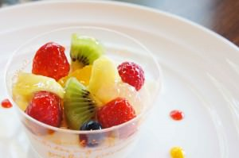

フルーツパンナコッタ
イタリアでは定番のデザート、パンナコッタ。パンナというのは、イタリア語で「生クリーム」という意味だそうです。そして、コッタというのは「煮た」という意味。生クリームに牛乳や砂糖を加えて、ゼラチンで固めて出来上がったのがパンナコッタです。
今日食べたパンナコッタは、フルーツたっぷりでとっても色鮮やか！ひとくち食べてみると … あれ？何だか普通のパンナコッタと違う …。
どこかでほんのりチョコレートのフレーバーがするー！パティシエさんに聞いてみたら、こっそりホワイトチョコと、バニラビーンズを加えているとのこと。これがフルーツの酸味とあっていて、とってもおいしいパンナコッタに変身してました ;D